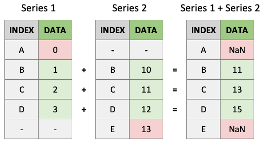
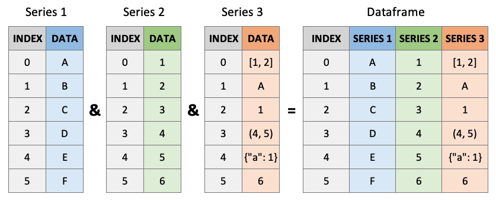

Chapter 7: Introduction to Pandas
Contents

Chapter 7: Introduction to Pandas#
Chapter Outline
Chapter Learning Objectives#
Create Pandas series with
pd.Series()and Pandas dataframe withpd.DataFrame()Be able to access values from a Series/DataFrame by indexing, slicing and boolean indexing using notation such as
df[],df.loc[],df.iloc[],df.query[]Perform basic arithmetic operations between two series and anticipate the result.
Describe how Pandas assigns dtypes to Series and what the
objectdtype isRead a standard .csv file from a local path or url using Pandas
pd.read_csv().Explain the relationship and differences between
np.ndarray,pd.Seriesandpd.DataFrameobjects in Python.
1. Introduction to Pandas#

Pandas is most popular Python library for tabular data structures. You can think of Pandas as an extremely powerful version of Excel (but free and with a lot more features!)
Pandas can be installed using conda:
conda install pandas
We usually import pandas with the alias pd. You’ll see these two imports at the top of most data science workflows:
import pandas as pd
import numpy as np
2. Pandas Series#
What are Series?#
A Series is like a NumPy array but with labels. They are strictly 1-dimensional and can contain any data type (integers, strings, floats, objects, etc), including a mix of them. Series can be created from a scalar, a list, ndarray or dictionary using pd.Series() (note the captial “S”). Here are some example series:

Creating Series#
By default, series are labelled with indices starting from 0. For example:
pd.Series(data = [-5, 1.3, 21, 6, 3])
0 -5.0
1 1.3
2 21.0
3 6.0
4 3.0
dtype: float64
But you can add a custom index:
pd.Series(data = [-5, 1.3, 21, 6, 3],
index = ['a', 'b', 'c', 'd', 'e'])
a -5.0
b 1.3
c 21.0
d 6.0
e 3.0
dtype: float64
You can create a Series from a dictionary:
pd.Series(data = {'a': 10, 'b': 20, 'c': 30})
a 10
b 20
c 30
dtype: int64
Or from an ndarray:
pd.Series(data = np.random.randn(3))
0 -0.428301
1 -0.104959
2 0.170835
dtype: float64
Or even a scalar:
pd.Series(3.141)
0 3.141
dtype: float64
pd.Series(data=3.141, index=['a', 'b', 'c'])
a 3.141
b 3.141
c 3.141
dtype: float64
Series Characteristics#
Series can be given a name attribute. I almost never use this but it might come up sometimes:
s = pd.Series(data = np.random.randn(5), name='random_series')
s
0 -1.363190
1 0.425801
2 -0.048966
3 -0.298172
4 1.899199
Name: random_series, dtype: float64
s.name
'random_series'
s.rename("another_name")
0 -1.363190
1 0.425801
2 -0.048966
3 -0.298172
4 1.899199
Name: another_name, dtype: float64
You can access the index labels of your series using the .index attribute:
s.index
RangeIndex(start=0, stop=5, step=1)
You can access the underlying data array using .to_numpy():
s.to_numpy()
array([-1.36319006, 0.42580052, -0.04896627, -0.29817227, 1.89919866])
pd.Series([[1, 2, 3], "b", 1]).to_numpy()
array([list([1, 2, 3]), 'b', 1], dtype=object)
Indexing and Slicing Series#
Series are very much like ndarrays (in fact, series can be passed to most NumPy functions!). They can be indexed using square brackets [ ] and sliced using colon : notation:
s = pd.Series(data = range(5),
index = ['A', 'B', 'C', 'D', 'E'])
s
A 0
B 1
C 2
D 3
E 4
dtype: int64
s[0]
0
s[[1, 2, 3]]
B 1
C 2
D 3
dtype: int64
s[0:3]
A 0
B 1
C 2
dtype: int64
Note above how array-based indexing and slicing also returns the series index.
Series are also like dictionaries, in that we can access values using index labels:
s["A"]
0
s[["B", "D", "C"]]
B 1
D 3
C 2
dtype: int64
s["A":"C"]
A 0
B 1
C 2
dtype: int64
"A" in s
True
"Z" in s
False
Series do allow for non-unique indexing, but be careful because indexing operations won’t return unique values:
x = pd.Series(data = range(5),
index = ["A", "A", "A", "B", "C"])
x
A 0
A 1
A 2
B 3
C 4
dtype: int64
x["A"]
A 0
A 1
A 2
dtype: int64
Finally, we can also do boolean indexing with series:
s[s >= 1]
B 1
C 2
D 3
E 4
dtype: int64
s[s > s.mean()]
D 3
E 4
dtype: int64
(s != 1)
A True
B False
C True
D True
E True
dtype: bool
Series Operations#
Unlike ndarrays operations between Series (+, -, /, *) align values based on their LABELS (not their position in the structure). The resulting index will be the sorted union of the two indexes. This gives you the flexibility to run operations on series regardless of their labels.
s1 = pd.Series(data = range(4),
index = ["A", "B", "C", "D"])
s1
A 0
B 1
C 2
D 3
dtype: int64
s2 = pd.Series(data = range(10, 14),
index = ["B", "C", "D", "E"])
s2
B 10
C 11
D 12
E 13
dtype: int64
s1 + s2
A NaN
B 11.0
C 13.0
D 15.0
E NaN
dtype: float64
As you can see above, indices that match will be operated on. Indices that don’t match will appear in the product but with NaN values:

We can also perform standard operations on a series, like multiplying or squaring. NumPy also accepts series as an argument to most functions because series are built off numpy arrays (more on that later):
s1 ** 2
A 0
B 1
C 4
D 9
dtype: int64
np.exp(s1)
A 1.000000
B 2.718282
C 7.389056
D 20.085537
dtype: float64
Finally, just like arrays, series have many built-in methods for various operations. You can find them all by running help(pd.Series):
print([_ for _ in dir(pd.Series) if not _.startswith("_")]) # print all common methods
['T', 'abs', 'add', 'add_prefix', 'add_suffix', 'agg', 'aggregate', 'align', 'all', 'any', 'append', 'apply', 'argmax', 'argmin', 'argsort', 'array', 'asfreq', 'asof', 'astype', 'at', 'at_time', 'attrs', 'autocorr', 'axes', 'backfill', 'between', 'between_time', 'bfill', 'bool', 'cat', 'clip', 'combine', 'combine_first', 'compare', 'convert_dtypes', 'copy', 'corr', 'count', 'cov', 'cummax', 'cummin', 'cumprod', 'cumsum', 'describe', 'diff', 'div', 'divide', 'divmod', 'dot', 'drop', 'drop_duplicates', 'droplevel', 'dropna', 'dt', 'dtype', 'dtypes', 'duplicated', 'empty', 'eq', 'equals', 'ewm', 'expanding', 'explode', 'factorize', 'ffill', 'fillna', 'filter', 'first', 'first_valid_index', 'floordiv', 'ge', 'get', 'groupby', 'gt', 'hasnans', 'head', 'hist', 'iat', 'idxmax', 'idxmin', 'iloc', 'index', 'infer_objects', 'interpolate', 'is_monotonic', 'is_monotonic_decreasing', 'is_monotonic_increasing', 'is_unique', 'isin', 'isna', 'isnull', 'item', 'items', 'iteritems', 'keys', 'kurt', 'kurtosis', 'last', 'last_valid_index', 'le', 'loc', 'lt', 'mad', 'map', 'mask', 'max', 'mean', 'median', 'memory_usage', 'min', 'mod', 'mode', 'mul', 'multiply', 'name', 'nbytes', 'ndim', 'ne', 'nlargest', 'notna', 'notnull', 'nsmallest', 'nunique', 'pad', 'pct_change', 'pipe', 'plot', 'pop', 'pow', 'prod', 'product', 'quantile', 'radd', 'rank', 'ravel', 'rdiv', 'rdivmod', 'reindex', 'reindex_like', 'rename', 'rename_axis', 'reorder_levels', 'repeat', 'replace', 'resample', 'reset_index', 'rfloordiv', 'rmod', 'rmul', 'rolling', 'round', 'rpow', 'rsub', 'rtruediv', 'sample', 'searchsorted', 'sem', 'set_axis', 'shape', 'shift', 'size', 'skew', 'slice_shift', 'sort_index', 'sort_values', 'sparse', 'squeeze', 'std', 'str', 'sub', 'subtract', 'sum', 'swapaxes', 'swaplevel', 'tail', 'take', 'to_clipboard', 'to_csv', 'to_dict', 'to_excel', 'to_frame', 'to_hdf', 'to_json', 'to_latex', 'to_list', 'to_markdown', 'to_numpy', 'to_period', 'to_pickle', 'to_sql', 'to_string', 'to_timestamp', 'to_xarray', 'tolist', 'transform', 'transpose', 'truediv', 'truncate', 'tshift', 'tz_convert', 'tz_localize', 'unique', 'unstack', 'update', 'value_counts', 'values', 'var', 'view', 'where', 'xs']
s1
A 0
B 1
C 2
D 3
dtype: int64
s1.mean()
1.5
s1.sum()
6
s1.astype(float)
A 0.0
B 1.0
C 2.0
D 3.0
dtype: float64
“Chaining” operations together is also common with pandas:
s1.add(3.141).pow(2).mean().astype(int)
22
Data Types#
Series can hold all the data types (dtypes) you’re used to, e.g., int, float, bool, etc. There are a few other special data types too (object, DateTime and Categorical) which we’ll talk about in this and later chapters. You can always read more about pandas dtypes in the documentation too. For example, here’s a series of dtype int64:
x = pd.Series(range(5))
x.dtype
dtype('int64')
The dtype “object” is used for series of strings or mixed data. Pandas is currently experimenting with a dedicated string dtype StringDtype, but it is still in testing.
x = pd.Series(['A', 'B'])
x
0 A
1 B
dtype: object
x = pd.Series(['A', 1, ["I", "AM", "A", "LIST"]])
x
0 A
1 1
2 [I, AM, A, LIST]
dtype: object
While flexible, it is recommended to avoid the use of object dtypes because of higher memory requirements. Essentially, in an object dtype series, every single element stores information about its individual dtype. We can inspect the dtypes of all the elements in a mixed series in several ways, below I’ll use the map method:
x.map(type)
0 <class 'str'>
1 <class 'int'>
2 <class 'list'>
dtype: object
We can see that each object in our series has a different dtype. This comes at a cost. Compare the memory usage of the series below:
x1 = pd.Series([1, 2, 3])
print(f"x1 dtype: {x1.dtype}")
print(f"x1 memory usage: {x1.memory_usage(deep=True)} bytes")
print("")
x2 = pd.Series([1, 2, "3"])
print(f"x2 dtype: {x2.dtype}")
print(f"x2 memory usage: {x2.memory_usage(deep=True)} bytes")
print("")
x3 = pd.Series([1, 2, "3"]).astype('int8') # coerce the object series to int8
print(f"x3 dtype: {x3.dtype}")
print(f"x3 memory usage: {x3.memory_usage(deep=True)} bytes")
x1 dtype: int64
x1 memory usage: 152 bytes
x2 dtype: object
x2 memory usage: 258 bytes
x3 dtype: int8
x3 memory usage: 131 bytes
In summary, try to use uniform dtypes where possible - they are more memory efficient!
One more gotcha, NaN (frequently used to represent missing values in data) is a float:
type(np.NaN)
float
This can be problematic if you have a series of integers and one missing value, because Pandas will cast the whole series to a float:
pd.Series([1, 2, 3, np.NaN])
0 1.0
1 2.0
2 3.0
3 NaN
dtype: float64
Only recently, Pandas has implemented a “nullable integer dtype”, which can handle NaN in an integer series without affecting the dtype. Note the captial “I” in the type below, differentiating it from numpy’s int64 dtype:
pd.Series([1, 2, 3, np.NaN]).astype('Int64')
0 1
1 2
2 3
3 <NA>
dtype: Int64
This is not the default in Pandas yet and functionality of this new feature is still subject to change.
3. Pandas DataFrames#
What are DataFrames?#
Pandas DataFrames are you’re new best friend. They are like the Excel spreadsheets you may be used to. DataFrames are really just Series stuck together! Think of a DataFrame as a dictionary of series, with the “keys” being the column labels and the “values” being the series data:

Creating DataFrames#
Dataframes can be created using pd.DataFrame() (note the capital “D” and “F”). Like series, index and column labels of dataframes are labelled starting from 0 by default:
pd.DataFrame([[1, 2, 3],
[4, 5, 6],
[7, 8, 9]])
| 0 | 1 | 2 | |
|---|---|---|---|
| 0 | 1 | 2 | 3 |
| 1 | 4 | 5 | 6 |
| 2 | 7 | 8 | 9 |
We can use the index and columns arguments to give them labels:
pd.DataFrame([[1, 2, 3],
[4, 5, 6],
[7, 8, 9]],
index = ["R1", "R2", "R3"],
columns = ["C1", "C2", "C3"])
| C1 | C2 | C3 | |
|---|---|---|---|
| R1 | 1 | 2 | 3 |
| R2 | 4 | 5 | 6 |
| R3 | 7 | 8 | 9 |
There are so many ways to create dataframes. I most often create them from dictionaries or ndarrays:
pd.DataFrame({"C1": [1, 2, 3],
"C2": ['A', 'B', 'C']},
index=["R1", "R2", "R3"])
| C1 | C2 | |
|---|---|---|
| R1 | 1 | A |
| R2 | 2 | B |
| R3 | 3 | C |
pd.DataFrame(np.random.randn(5, 5),
index=[f"row_{_}" for _ in range(1, 6)],
columns=[f"col_{_}" for _ in range(1, 6)])
| col_1 | col_2 | col_3 | col_4 | col_5 | |
|---|---|---|---|---|---|
| row_1 | -1.511598 | -1.073875 | 2.990474 | 2.408082 | 0.101569 |
| row_2 | 0.767246 | 0.423030 | -0.135450 | 0.369545 | 0.761417 |
| row_3 | 0.714677 | 1.489430 | 0.843088 | -1.284666 | 1.310033 |
| row_4 | -0.513656 | 0.539531 | 0.207057 | 0.425888 | 0.481794 |
| row_5 | -1.361988 | -0.479158 | 0.158281 | -0.196813 | 0.136745 |
pd.DataFrame(np.array([['Tom', 7], ['Mike', 15], ['Tiffany', 3]]))
| 0 | 1 | |
|---|---|---|
| 0 | Tom | 7 |
| 1 | Mike | 15 |
| 2 | Tiffany | 3 |
Here’s a table of the main ways you can create dataframes (see the Pandas documentation for more):
Create DataFrame from |
Code |
|---|---|
Lists of lists |
|
ndarray |
|
Dictionary |
|
List of tuples |
|
Series |
|
Indexing and Slicing DataFrames#
There are several main ways to select data from a DataFrame:
[].loc[].iloc[]Boolean indexing
.query()
df = pd.DataFrame({"Name": ["Tom", "Mike", "Tiffany"],
"Language": ["Python", "Python", "R"],
"Courses": [5, 4, 7]})
df
| Name | Language | Courses | |
|---|---|---|---|
| 0 | Tom | Python | 5 |
| 1 | Mike | Python | 4 |
| 2 | Tiffany | R | 7 |
Indexing with []#
Select columns by single labels, lists of labels, or slices:
df['Name'] # returns a series
0 Tom
1 Mike
2 Tiffany
Name: Name, dtype: object
df[['Name']] # returns a dataframe!
| Name | |
|---|---|
| 0 | Tom |
| 1 | Mike |
| 2 | Tiffany |
df[['Name', 'Language']]
| Name | Language | |
|---|---|---|
| 0 | Tom | Python |
| 1 | Mike | Python |
| 2 | Tiffany | R |
You can only index rows by using slices, not single values (but not recommended, see preferred methods below).
df[0] # doesn't work
---------------------------------------------------------------------------
KeyError Traceback (most recent call last)
/opt/miniconda3/lib/python3.7/site-packages/pandas/core/indexes/base.py in get_loc(self, key, method, tolerance)
2888 try:
-> 2889 return self._engine.get_loc(casted_key)
2890 except KeyError as err:
pandas/_libs/index.pyx in pandas._libs.index.IndexEngine.get_loc()
pandas/_libs/index.pyx in pandas._libs.index.IndexEngine.get_loc()
pandas/_libs/hashtable_class_helper.pxi in pandas._libs.hashtable.PyObjectHashTable.get_item()
pandas/_libs/hashtable_class_helper.pxi in pandas._libs.hashtable.PyObjectHashTable.get_item()
KeyError: 0
The above exception was the direct cause of the following exception:
KeyError Traceback (most recent call last)
<ipython-input-57-feb9bd85061b> in <module>
----> 1 df[0] # doesn't work
/opt/miniconda3/lib/python3.7/site-packages/pandas/core/frame.py in __getitem__(self, key)
2900 if self.columns.nlevels > 1:
2901 return self._getitem_multilevel(key)
-> 2902 indexer = self.columns.get_loc(key)
2903 if is_integer(indexer):
2904 indexer = [indexer]
/opt/miniconda3/lib/python3.7/site-packages/pandas/core/indexes/base.py in get_loc(self, key, method, tolerance)
2889 return self._engine.get_loc(casted_key)
2890 except KeyError as err:
-> 2891 raise KeyError(key) from err
2892
2893 if tolerance is not None:
KeyError: 0
df[0:1] # does work
| Name | Language | Courses | |
|---|---|---|---|
| 0 | Tom | Python | 5 |
df[1:] # does work
| Name | Language | Courses | |
|---|---|---|---|
| 1 | Mike | Python | 4 |
| 2 | Tiffany | R | 7 |
Indexing with .loc and .iloc#
Pandas created the methods .loc[] and .iloc[] as more flexible alternatives for accessing data from a dataframe. Use df.iloc[] for indexing with integers and df.loc[] for indexing with labels. These are typically the recommended methods of indexing in Pandas.
df
| Name | Language | Courses | |
|---|---|---|---|
| 0 | Tom | Python | 5 |
| 1 | Mike | Python | 4 |
| 2 | Tiffany | R | 7 |
First we’ll try out .iloc which accepts integers as references to rows/columns:
df.iloc[0] # returns a series
Name Tom
Language Python
Courses 5
Name: 0, dtype: object
df.iloc[0:2] # slicing returns a dataframe
| Name | Language | Courses | |
|---|---|---|---|
| 0 | Tom | Python | 5 |
| 1 | Mike | Python | 4 |
df.iloc[2, 1] # returns the indexed object
'R'
df.iloc[[0, 1], [1, 2]] # returns a dataframe
| Language | Courses | |
|---|---|---|
| 0 | Python | 5 |
| 1 | Python | 4 |
Now let’s look at .loc which accepts labels as references to rows/columns:
df.loc[:, 'Name']
0 Tom
1 Mike
2 Tiffany
Name: Name, dtype: object
df.loc[:, 'Name':'Language']
| Name | Language | |
|---|---|---|
| 0 | Tom | Python |
| 1 | Mike | Python |
| 2 | Tiffany | R |
df.loc[[0, 2], ['Language']]
| Language | |
|---|---|
| 0 | Python |
| 2 | R |
Sometimes we want to use a mix of integers and labels to reference data in a dataframe. The easiest way to do this is to use .loc[] with a label then use an integer in combinations with .index or .columns:
df.index
RangeIndex(start=0, stop=3, step=1)
df.columns
Index(['Name', 'Language', 'Courses'], dtype='object')
df.loc[df.index[0], 'Courses'] # I want to reference the first row and the column named "Courses"
5
df.loc[2, df.columns[1]] # I want to reference row "2" and the second column
'R'
Boolean indexing#
Just like with series, we can select data based on boolean masks:
df
| Name | Language | Courses | |
|---|---|---|---|
| 0 | Tom | Python | 5 |
| 1 | Mike | Python | 4 |
| 2 | Tiffany | R | 7 |
df[df['Courses'] > 5]
| Name | Language | Courses | |
|---|---|---|---|
| 2 | Tiffany | R | 7 |
df[df['Name'] == "Tom"]
| Name | Language | Courses | |
|---|---|---|---|
| 0 | Tom | Python | 5 |
Indexing with .query()#
Boolean masks work fine, but I prefer to use the .query() method for selecting data. df.query() is a powerful tool for filtering data. It has an odd syntax, one of the strangest I’ve seen in Python, it is more like SQL - df.query() accepts a string expression to evaluate and it “knows” the names of the columns in your dataframe.
df.query("Courses > 4 & Language == 'Python'")
| Name | Language | Courses | |
|---|---|---|---|
| 0 | Tom | Python | 5 |
Note the use of single quotes AND double quotes above, lucky we have both in Python! Compare this to the equivalent boolean indexing operation and you can see that .query() is much more readable, especially as the query gets bigger!
df[(df['Courses'] > 4) & (df['Language'] == 'Python')]
| Name | Language | Courses | |
|---|---|---|---|
| 0 | Tom | Python | 5 |
Query also allows you to reference variable in the current workspace using the @ symbol:
course_threshold = 4
df.query("Courses > @course_threshold")
| Name | Language | Courses | |
|---|---|---|---|
| 0 | Tom | Python | 5 |
| 2 | Tiffany | R | 7 |
Indexing cheatsheet#
Method |
Syntax |
Output |
|---|---|---|
Select column |
|
Series |
Select row slice |
|
DataFrame |
Select row/column by label |
|
Object for single selection, Series for one row/column, otherwise DataFrame |
Select row/column by integer |
|
Object for single selection, Series for one row/column, otherwise DataFrame |
Select by row integer & column label |
|
Object for single selection, Series for one row/column, otherwise DataFrame |
Select by row label & column integer |
|
Object for single selection, Series for one row/column, otherwise DataFrame |
Select by boolean |
|
Object for single selection, Series for one row/column, otherwise DataFrame |
Select by boolean expression |
|
Object for single selection, Series for one row/column, otherwise DataFrame |
Reading/Writing Data From External Sources#
.csv files#
A lot of the time you will be loading .csv files for use in pandas. You can use the pd.read_csv() function for this. In the following chapters we’ll use a real dataset of my cycling commutes to the University of British Columbia. There are so many arguments that can be used to help read in your .csv file in an efficient and appropriate manner, feel free to check them out now (by using shift + tab in Jupyter, or typing help(pd.read_csv)).
path = 'data/cycling_data.csv'
df = pd.read_csv(path, index_col=0, parse_dates=True)
df
| Name | Type | Time | Distance | Comments | |
|---|---|---|---|---|---|
| Date | |||||
| 2019-09-10 00:13:04 | Afternoon Ride | Ride | 2084 | 12.62 | Rain |
| 2019-09-10 13:52:18 | Morning Ride | Ride | 2531 | 13.03 | rain |
| 2019-09-11 00:23:50 | Afternoon Ride | Ride | 1863 | 12.52 | Wet road but nice weather |
| 2019-09-11 14:06:19 | Morning Ride | Ride | 2192 | 12.84 | Stopped for photo of sunrise |
| 2019-09-12 00:28:05 | Afternoon Ride | Ride | 1891 | 12.48 | Tired by the end of the week |
| 2019-09-16 13:57:48 | Morning Ride | Ride | 2272 | 12.45 | Rested after the weekend! |
| 2019-09-17 00:15:47 | Afternoon Ride | Ride | 1973 | 12.45 | Legs feeling strong! |
| 2019-09-17 13:43:34 | Morning Ride | Ride | 2285 | 12.60 | Raining |
| 2019-09-18 13:49:53 | Morning Ride | Ride | 2903 | 14.57 | Raining today |
| 2019-09-18 00:15:52 | Afternoon Ride | Ride | 2101 | 12.48 | Pumped up tires |
| 2019-09-19 00:30:01 | Afternoon Ride | Ride | 48062 | 12.48 | Feeling good |
| 2019-09-19 13:52:09 | Morning Ride | Ride | 2090 | 12.59 | Getting colder which is nice |
| 2019-09-20 01:02:05 | Afternoon Ride | Ride | 2961 | 12.81 | Feeling good |
| 2019-09-23 13:50:41 | Morning Ride | Ride | 2462 | 12.68 | Rested after the weekend! |
| 2019-09-24 00:35:42 | Afternoon Ride | Ride | 2076 | 12.47 | Oiled chain, bike feels smooth |
| 2019-09-24 13:41:24 | Morning Ride | Ride | 2321 | 12.68 | Bike feeling much smoother |
| 2019-09-25 00:07:21 | Afternoon Ride | Ride | 1775 | 12.10 | Feeling really tired |
| 2019-09-25 13:35:41 | Morning Ride | Ride | 2124 | 12.65 | Stopped for photo of sunrise |
| 2019-09-26 00:13:33 | Afternoon Ride | Ride | 1860 | 12.52 | raining |
| 2019-09-26 13:42:43 | Morning Ride | Ride | 2350 | 12.91 | Detour around trucks at Jericho |
| 2019-09-27 01:00:18 | Afternoon Ride | Ride | 1712 | 12.47 | Tired by the end of the week |
| 2019-09-30 13:53:52 | Morning Ride | Ride | 2118 | 12.71 | Rested after the weekend! |
| 2019-10-01 00:15:07 | Afternoon Ride | Ride | 1732 | NaN | Legs feeling strong! |
| 2019-10-01 13:45:55 | Morning Ride | Ride | 2222 | 12.82 | Beautiful morning! Feeling fit |
| 2019-10-02 00:13:09 | Afternoon Ride | Ride | 1756 | NaN | A little tired today but good weather |
| 2019-10-02 13:46:06 | Morning Ride | Ride | 2134 | 13.06 | Bit tired today but good weather |
| 2019-10-03 00:45:22 | Afternoon Ride | Ride | 1724 | 12.52 | Feeling good |
| 2019-10-03 13:47:36 | Morning Ride | Ride | 2182 | 12.68 | Wet road |
| 2019-10-04 01:08:08 | Afternoon Ride | Ride | 1870 | 12.63 | Very tired, riding into the wind |
| 2019-10-09 13:55:40 | Morning Ride | Ride | 2149 | 12.70 | Really cold! But feeling good |
| 2019-10-10 00:10:31 | Afternoon Ride | Ride | 1841 | 12.59 | Feeling good after a holiday break! |
| 2019-10-10 13:47:14 | Morning Ride | Ride | 2463 | 12.79 | Stopped for photo of sunrise |
| 2019-10-11 00:16:57 | Afternoon Ride | Ride | 1843 | 11.79 | Bike feeling tight, needs an oil and pump |
You can print a dataframe to .csv using df.to_csv(). Be sure to check out all of the possible arguments to write your dataframe exactly how you want it.
url#
Pandas also facilitates reading directly from a url - pd.read_csv() accepts urls as input:
url = 'https://raw.githubusercontent.com/TomasBeuzen/toy-datasets/master/wine_1.csv'
pd.read_csv(url)
| Bottle | Grape | Origin | Alcohol | pH | Colour | Aroma | |
|---|---|---|---|---|---|---|---|
| 0 | 1 | Chardonnay | Australia | 14.23 | 3.51 | White | Floral |
| 1 | 2 | Pinot Grigio | Italy | 13.20 | 3.30 | White | Fruity |
| 2 | 3 | Pinot Blanc | France | 13.16 | 3.16 | White | Citrus |
| 3 | 4 | Shiraz | Chile | 14.91 | 3.39 | Red | Berry |
| 4 | 5 | Malbec | Argentina | 13.83 | 3.28 | Red | Fruity |
Other#
Pandas can read data from all sorts of other file types including HTML, JSON, Excel, Parquet, Feather, etc. There are generally dedicated functions for reading these file types, see the Pandas documentation here.
Common DataFrame Operations#
DataFrames have built-in functions for performing most common operations, e.g., .min(), idxmin(), sort_values(), etc. They’re all documented in the Pandas documentation here but I’ll demonstrate a few below:
df = pd.read_csv('data/cycling_data.csv')
df
| Date | Name | Type | Time | Distance | Comments | |
|---|---|---|---|---|---|---|
| 0 | 10 Sep 2019, 00:13:04 | Afternoon Ride | Ride | 2084 | 12.62 | Rain |
| 1 | 10 Sep 2019, 13:52:18 | Morning Ride | Ride | 2531 | 13.03 | rain |
| 2 | 11 Sep 2019, 00:23:50 | Afternoon Ride | Ride | 1863 | 12.52 | Wet road but nice weather |
| 3 | 11 Sep 2019, 14:06:19 | Morning Ride | Ride | 2192 | 12.84 | Stopped for photo of sunrise |
| 4 | 12 Sep 2019, 00:28:05 | Afternoon Ride | Ride | 1891 | 12.48 | Tired by the end of the week |
| 5 | 16 Sep 2019, 13:57:48 | Morning Ride | Ride | 2272 | 12.45 | Rested after the weekend! |
| 6 | 17 Sep 2019, 00:15:47 | Afternoon Ride | Ride | 1973 | 12.45 | Legs feeling strong! |
| 7 | 17 Sep 2019, 13:43:34 | Morning Ride | Ride | 2285 | 12.60 | Raining |
| 8 | 18 Sep 2019, 13:49:53 | Morning Ride | Ride | 2903 | 14.57 | Raining today |
| 9 | 18 Sep 2019, 00:15:52 | Afternoon Ride | Ride | 2101 | 12.48 | Pumped up tires |
| 10 | 19 Sep 2019, 00:30:01 | Afternoon Ride | Ride | 48062 | 12.48 | Feeling good |
| 11 | 19 Sep 2019, 13:52:09 | Morning Ride | Ride | 2090 | 12.59 | Getting colder which is nice |
| 12 | 20 Sep 2019, 01:02:05 | Afternoon Ride | Ride | 2961 | 12.81 | Feeling good |
| 13 | 23 Sep 2019, 13:50:41 | Morning Ride | Ride | 2462 | 12.68 | Rested after the weekend! |
| 14 | 24 Sep 2019, 00:35:42 | Afternoon Ride | Ride | 2076 | 12.47 | Oiled chain, bike feels smooth |
| 15 | 24 Sep 2019, 13:41:24 | Morning Ride | Ride | 2321 | 12.68 | Bike feeling much smoother |
| 16 | 25 Sep 2019, 00:07:21 | Afternoon Ride | Ride | 1775 | 12.10 | Feeling really tired |
| 17 | 25 Sep 2019, 13:35:41 | Morning Ride | Ride | 2124 | 12.65 | Stopped for photo of sunrise |
| 18 | 26 Sep 2019, 00:13:33 | Afternoon Ride | Ride | 1860 | 12.52 | raining |
| 19 | 26 Sep 2019, 13:42:43 | Morning Ride | Ride | 2350 | 12.91 | Detour around trucks at Jericho |
| 20 | 27 Sep 2019, 01:00:18 | Afternoon Ride | Ride | 1712 | 12.47 | Tired by the end of the week |
| 21 | 30 Sep 2019, 13:53:52 | Morning Ride | Ride | 2118 | 12.71 | Rested after the weekend! |
| 22 | 1 Oct 2019, 00:15:07 | Afternoon Ride | Ride | 1732 | NaN | Legs feeling strong! |
| 23 | 1 Oct 2019, 13:45:55 | Morning Ride | Ride | 2222 | 12.82 | Beautiful morning! Feeling fit |
| 24 | 2 Oct 2019, 00:13:09 | Afternoon Ride | Ride | 1756 | NaN | A little tired today but good weather |
| 25 | 2 Oct 2019, 13:46:06 | Morning Ride | Ride | 2134 | 13.06 | Bit tired today but good weather |
| 26 | 3 Oct 2019, 00:45:22 | Afternoon Ride | Ride | 1724 | 12.52 | Feeling good |
| 27 | 3 Oct 2019, 13:47:36 | Morning Ride | Ride | 2182 | 12.68 | Wet road |
| 28 | 4 Oct 2019, 01:08:08 | Afternoon Ride | Ride | 1870 | 12.63 | Very tired, riding into the wind |
| 29 | 9 Oct 2019, 13:55:40 | Morning Ride | Ride | 2149 | 12.70 | Really cold! But feeling good |
| 30 | 10 Oct 2019, 00:10:31 | Afternoon Ride | Ride | 1841 | 12.59 | Feeling good after a holiday break! |
| 31 | 10 Oct 2019, 13:47:14 | Morning Ride | Ride | 2463 | 12.79 | Stopped for photo of sunrise |
| 32 | 11 Oct 2019, 00:16:57 | Afternoon Ride | Ride | 1843 | 11.79 | Bike feeling tight, needs an oil and pump |
df.min()
Date 1 Oct 2019, 00:15:07
Name Afternoon Ride
Type Ride
Time 1712
Distance 11.79
Comments A little tired today but good weather
dtype: object
df['Time'].min()
1712
df['Time'].idxmin()
20
df.iloc[20]
Date 27 Sep 2019, 01:00:18
Name Afternoon Ride
Type Ride
Time 1712
Distance 12.47
Comments Tired by the end of the week
Name: 20, dtype: object
df.sum()
Date 10 Sep 2019, 00:13:0410 Sep 2019, 13:52:1811 S...
Name Afternoon RideMorning RideAfternoon RideMornin...
Type RideRideRideRideRideRideRideRideRideRideRideRi...
Time 115922
Distance 392.69
Comments RainrainWet road but nice weatherStopped for p...
dtype: object
Some methods like .mean() will only operate on numeric columns:
df.mean()
Time 3512.787879
Distance 12.667419
dtype: float64
Some methods require arguments to be specified, like .sort_values():
df.sort_values(by='Time')
| Date | Name | Type | Time | Distance | Comments | |
|---|---|---|---|---|---|---|
| 20 | 27 Sep 2019, 01:00:18 | Afternoon Ride | Ride | 1712 | 12.47 | Tired by the end of the week |
| 26 | 3 Oct 2019, 00:45:22 | Afternoon Ride | Ride | 1724 | 12.52 | Feeling good |
| 22 | 1 Oct 2019, 00:15:07 | Afternoon Ride | Ride | 1732 | NaN | Legs feeling strong! |
| 24 | 2 Oct 2019, 00:13:09 | Afternoon Ride | Ride | 1756 | NaN | A little tired today but good weather |
| 16 | 25 Sep 2019, 00:07:21 | Afternoon Ride | Ride | 1775 | 12.10 | Feeling really tired |
| 30 | 10 Oct 2019, 00:10:31 | Afternoon Ride | Ride | 1841 | 12.59 | Feeling good after a holiday break! |
| 32 | 11 Oct 2019, 00:16:57 | Afternoon Ride | Ride | 1843 | 11.79 | Bike feeling tight, needs an oil and pump |
| 18 | 26 Sep 2019, 00:13:33 | Afternoon Ride | Ride | 1860 | 12.52 | raining |
| 2 | 11 Sep 2019, 00:23:50 | Afternoon Ride | Ride | 1863 | 12.52 | Wet road but nice weather |
| 28 | 4 Oct 2019, 01:08:08 | Afternoon Ride | Ride | 1870 | 12.63 | Very tired, riding into the wind |
| 4 | 12 Sep 2019, 00:28:05 | Afternoon Ride | Ride | 1891 | 12.48 | Tired by the end of the week |
| 6 | 17 Sep 2019, 00:15:47 | Afternoon Ride | Ride | 1973 | 12.45 | Legs feeling strong! |
| 14 | 24 Sep 2019, 00:35:42 | Afternoon Ride | Ride | 2076 | 12.47 | Oiled chain, bike feels smooth |
| 0 | 10 Sep 2019, 00:13:04 | Afternoon Ride | Ride | 2084 | 12.62 | Rain |
| 11 | 19 Sep 2019, 13:52:09 | Morning Ride | Ride | 2090 | 12.59 | Getting colder which is nice |
| 9 | 18 Sep 2019, 00:15:52 | Afternoon Ride | Ride | 2101 | 12.48 | Pumped up tires |
| 21 | 30 Sep 2019, 13:53:52 | Morning Ride | Ride | 2118 | 12.71 | Rested after the weekend! |
| 17 | 25 Sep 2019, 13:35:41 | Morning Ride | Ride | 2124 | 12.65 | Stopped for photo of sunrise |
| 25 | 2 Oct 2019, 13:46:06 | Morning Ride | Ride | 2134 | 13.06 | Bit tired today but good weather |
| 29 | 9 Oct 2019, 13:55:40 | Morning Ride | Ride | 2149 | 12.70 | Really cold! But feeling good |
| 27 | 3 Oct 2019, 13:47:36 | Morning Ride | Ride | 2182 | 12.68 | Wet road |
| 3 | 11 Sep 2019, 14:06:19 | Morning Ride | Ride | 2192 | 12.84 | Stopped for photo of sunrise |
| 23 | 1 Oct 2019, 13:45:55 | Morning Ride | Ride | 2222 | 12.82 | Beautiful morning! Feeling fit |
| 5 | 16 Sep 2019, 13:57:48 | Morning Ride | Ride | 2272 | 12.45 | Rested after the weekend! |
| 7 | 17 Sep 2019, 13:43:34 | Morning Ride | Ride | 2285 | 12.60 | Raining |
| 15 | 24 Sep 2019, 13:41:24 | Morning Ride | Ride | 2321 | 12.68 | Bike feeling much smoother |
| 19 | 26 Sep 2019, 13:42:43 | Morning Ride | Ride | 2350 | 12.91 | Detour around trucks at Jericho |
| 13 | 23 Sep 2019, 13:50:41 | Morning Ride | Ride | 2462 | 12.68 | Rested after the weekend! |
| 31 | 10 Oct 2019, 13:47:14 | Morning Ride | Ride | 2463 | 12.79 | Stopped for photo of sunrise |
| 1 | 10 Sep 2019, 13:52:18 | Morning Ride | Ride | 2531 | 13.03 | rain |
| 8 | 18 Sep 2019, 13:49:53 | Morning Ride | Ride | 2903 | 14.57 | Raining today |
| 12 | 20 Sep 2019, 01:02:05 | Afternoon Ride | Ride | 2961 | 12.81 | Feeling good |
| 10 | 19 Sep 2019, 00:30:01 | Afternoon Ride | Ride | 48062 | 12.48 | Feeling good |
df.sort_values(by='Time', ascending=False)
| Date | Name | Type | Time | Distance | Comments | |
|---|---|---|---|---|---|---|
| 10 | 19 Sep 2019, 00:30:01 | Afternoon Ride | Ride | 48062 | 12.48 | Feeling good |
| 12 | 20 Sep 2019, 01:02:05 | Afternoon Ride | Ride | 2961 | 12.81 | Feeling good |
| 8 | 18 Sep 2019, 13:49:53 | Morning Ride | Ride | 2903 | 14.57 | Raining today |
| 1 | 10 Sep 2019, 13:52:18 | Morning Ride | Ride | 2531 | 13.03 | rain |
| 31 | 10 Oct 2019, 13:47:14 | Morning Ride | Ride | 2463 | 12.79 | Stopped for photo of sunrise |
| 13 | 23 Sep 2019, 13:50:41 | Morning Ride | Ride | 2462 | 12.68 | Rested after the weekend! |
| 19 | 26 Sep 2019, 13:42:43 | Morning Ride | Ride | 2350 | 12.91 | Detour around trucks at Jericho |
| 15 | 24 Sep 2019, 13:41:24 | Morning Ride | Ride | 2321 | 12.68 | Bike feeling much smoother |
| 7 | 17 Sep 2019, 13:43:34 | Morning Ride | Ride | 2285 | 12.60 | Raining |
| 5 | 16 Sep 2019, 13:57:48 | Morning Ride | Ride | 2272 | 12.45 | Rested after the weekend! |
| 23 | 1 Oct 2019, 13:45:55 | Morning Ride | Ride | 2222 | 12.82 | Beautiful morning! Feeling fit |
| 3 | 11 Sep 2019, 14:06:19 | Morning Ride | Ride | 2192 | 12.84 | Stopped for photo of sunrise |
| 27 | 3 Oct 2019, 13:47:36 | Morning Ride | Ride | 2182 | 12.68 | Wet road |
| 29 | 9 Oct 2019, 13:55:40 | Morning Ride | Ride | 2149 | 12.70 | Really cold! But feeling good |
| 25 | 2 Oct 2019, 13:46:06 | Morning Ride | Ride | 2134 | 13.06 | Bit tired today but good weather |
| 17 | 25 Sep 2019, 13:35:41 | Morning Ride | Ride | 2124 | 12.65 | Stopped for photo of sunrise |
| 21 | 30 Sep 2019, 13:53:52 | Morning Ride | Ride | 2118 | 12.71 | Rested after the weekend! |
| 9 | 18 Sep 2019, 00:15:52 | Afternoon Ride | Ride | 2101 | 12.48 | Pumped up tires |
| 11 | 19 Sep 2019, 13:52:09 | Morning Ride | Ride | 2090 | 12.59 | Getting colder which is nice |
| 0 | 10 Sep 2019, 00:13:04 | Afternoon Ride | Ride | 2084 | 12.62 | Rain |
| 14 | 24 Sep 2019, 00:35:42 | Afternoon Ride | Ride | 2076 | 12.47 | Oiled chain, bike feels smooth |
| 6 | 17 Sep 2019, 00:15:47 | Afternoon Ride | Ride | 1973 | 12.45 | Legs feeling strong! |
| 4 | 12 Sep 2019, 00:28:05 | Afternoon Ride | Ride | 1891 | 12.48 | Tired by the end of the week |
| 28 | 4 Oct 2019, 01:08:08 | Afternoon Ride | Ride | 1870 | 12.63 | Very tired, riding into the wind |
| 2 | 11 Sep 2019, 00:23:50 | Afternoon Ride | Ride | 1863 | 12.52 | Wet road but nice weather |
| 18 | 26 Sep 2019, 00:13:33 | Afternoon Ride | Ride | 1860 | 12.52 | raining |
| 32 | 11 Oct 2019, 00:16:57 | Afternoon Ride | Ride | 1843 | 11.79 | Bike feeling tight, needs an oil and pump |
| 30 | 10 Oct 2019, 00:10:31 | Afternoon Ride | Ride | 1841 | 12.59 | Feeling good after a holiday break! |
| 16 | 25 Sep 2019, 00:07:21 | Afternoon Ride | Ride | 1775 | 12.10 | Feeling really tired |
| 24 | 2 Oct 2019, 00:13:09 | Afternoon Ride | Ride | 1756 | NaN | A little tired today but good weather |
| 22 | 1 Oct 2019, 00:15:07 | Afternoon Ride | Ride | 1732 | NaN | Legs feeling strong! |
| 26 | 3 Oct 2019, 00:45:22 | Afternoon Ride | Ride | 1724 | 12.52 | Feeling good |
| 20 | 27 Sep 2019, 01:00:18 | Afternoon Ride | Ride | 1712 | 12.47 | Tired by the end of the week |
Some methods will operate on the index/columns, like .sort_index():
df.sort_index(ascending=False)
| Date | Name | Type | Time | Distance | Comments | |
|---|---|---|---|---|---|---|
| 32 | 11 Oct 2019, 00:16:57 | Afternoon Ride | Ride | 1843 | 11.79 | Bike feeling tight, needs an oil and pump |
| 31 | 10 Oct 2019, 13:47:14 | Morning Ride | Ride | 2463 | 12.79 | Stopped for photo of sunrise |
| 30 | 10 Oct 2019, 00:10:31 | Afternoon Ride | Ride | 1841 | 12.59 | Feeling good after a holiday break! |
| 29 | 9 Oct 2019, 13:55:40 | Morning Ride | Ride | 2149 | 12.70 | Really cold! But feeling good |
| 28 | 4 Oct 2019, 01:08:08 | Afternoon Ride | Ride | 1870 | 12.63 | Very tired, riding into the wind |
| 27 | 3 Oct 2019, 13:47:36 | Morning Ride | Ride | 2182 | 12.68 | Wet road |
| 26 | 3 Oct 2019, 00:45:22 | Afternoon Ride | Ride | 1724 | 12.52 | Feeling good |
| 25 | 2 Oct 2019, 13:46:06 | Morning Ride | Ride | 2134 | 13.06 | Bit tired today but good weather |
| 24 | 2 Oct 2019, 00:13:09 | Afternoon Ride | Ride | 1756 | NaN | A little tired today but good weather |
| 23 | 1 Oct 2019, 13:45:55 | Morning Ride | Ride | 2222 | 12.82 | Beautiful morning! Feeling fit |
| 22 | 1 Oct 2019, 00:15:07 | Afternoon Ride | Ride | 1732 | NaN | Legs feeling strong! |
| 21 | 30 Sep 2019, 13:53:52 | Morning Ride | Ride | 2118 | 12.71 | Rested after the weekend! |
| 20 | 27 Sep 2019, 01:00:18 | Afternoon Ride | Ride | 1712 | 12.47 | Tired by the end of the week |
| 19 | 26 Sep 2019, 13:42:43 | Morning Ride | Ride | 2350 | 12.91 | Detour around trucks at Jericho |
| 18 | 26 Sep 2019, 00:13:33 | Afternoon Ride | Ride | 1860 | 12.52 | raining |
| 17 | 25 Sep 2019, 13:35:41 | Morning Ride | Ride | 2124 | 12.65 | Stopped for photo of sunrise |
| 16 | 25 Sep 2019, 00:07:21 | Afternoon Ride | Ride | 1775 | 12.10 | Feeling really tired |
| 15 | 24 Sep 2019, 13:41:24 | Morning Ride | Ride | 2321 | 12.68 | Bike feeling much smoother |
| 14 | 24 Sep 2019, 00:35:42 | Afternoon Ride | Ride | 2076 | 12.47 | Oiled chain, bike feels smooth |
| 13 | 23 Sep 2019, 13:50:41 | Morning Ride | Ride | 2462 | 12.68 | Rested after the weekend! |
| 12 | 20 Sep 2019, 01:02:05 | Afternoon Ride | Ride | 2961 | 12.81 | Feeling good |
| 11 | 19 Sep 2019, 13:52:09 | Morning Ride | Ride | 2090 | 12.59 | Getting colder which is nice |
| 10 | 19 Sep 2019, 00:30:01 | Afternoon Ride | Ride | 48062 | 12.48 | Feeling good |
| 9 | 18 Sep 2019, 00:15:52 | Afternoon Ride | Ride | 2101 | 12.48 | Pumped up tires |
| 8 | 18 Sep 2019, 13:49:53 | Morning Ride | Ride | 2903 | 14.57 | Raining today |
| 7 | 17 Sep 2019, 13:43:34 | Morning Ride | Ride | 2285 | 12.60 | Raining |
| 6 | 17 Sep 2019, 00:15:47 | Afternoon Ride | Ride | 1973 | 12.45 | Legs feeling strong! |
| 5 | 16 Sep 2019, 13:57:48 | Morning Ride | Ride | 2272 | 12.45 | Rested after the weekend! |
| 4 | 12 Sep 2019, 00:28:05 | Afternoon Ride | Ride | 1891 | 12.48 | Tired by the end of the week |
| 3 | 11 Sep 2019, 14:06:19 | Morning Ride | Ride | 2192 | 12.84 | Stopped for photo of sunrise |
| 2 | 11 Sep 2019, 00:23:50 | Afternoon Ride | Ride | 1863 | 12.52 | Wet road but nice weather |
| 1 | 10 Sep 2019, 13:52:18 | Morning Ride | Ride | 2531 | 13.03 | rain |
| 0 | 10 Sep 2019, 00:13:04 | Afternoon Ride | Ride | 2084 | 12.62 | Rain |
4. Why ndarrays and Series and DataFrames?#
At this point, you might be asking why we need all these different data structures. Well, they all serve different purposes and are suited to different tasks. For example:
NumPy is typically faster/uses less memory than Pandas;
not all Python packages are compatible with NumPy & Pandas;
the ability to add labels to data can be useful (e.g., for time series);
NumPy and Pandas have different built-in functions available.
My advice: use the simplest data structure that fulfills your needs!
Finally, we’ve seen how to go from: ndarray (np.array()) -> series (pd.series()) -> dataframe (pd.DataFrame()). Remember that we can also go the other way: dataframe/series -> ndarray using df.to_numpy().